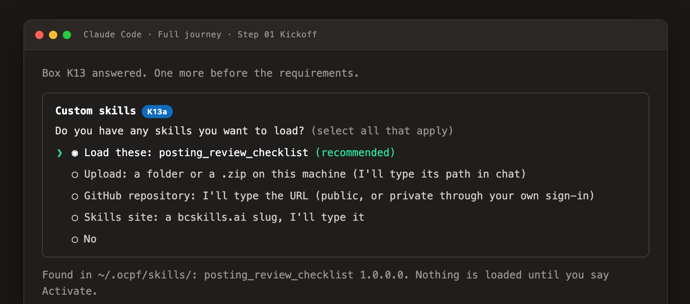
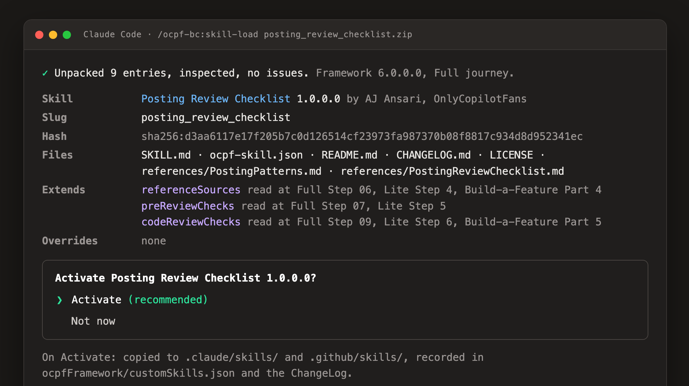

Custom Skills
A Custom Skill is a folder of Markdown and JSON that you make once and load into any Business Central project that follows the framework. The framework reads it at declared moments, lets it add rules but never relax one, and shows it to you before activating it. The three commands are /ocpf-bc:skill-create, /ocpf-bc:skill-load, and /ocpf-bc:skill-update.
How skills fit into the framework
The framework runs the project: the steps, the exit gates, the documents, the reviews. A skill is consulted at six points along the way and nowhere else. It extends a point by adding material the agent reads, or overrides one of three allowlisted items.
| Extension point | What the skill supplies | Read at |
|---|---|---|
| referenceSources | Markdown the agent reads before writing code, beside the Standards Guide and the patterns library | Full Step 06, Lite Step 4, Build-a-Feature Part 4 |
| preReviewChecks | A checklist the reviewer sub-agent runs after the first clean compile | Full Step 07, Lite Step 5 |
| codeReviewChecks | A checklist the Code Review runs; additive, never relaxing a rule | Full Step 09, Lite Step 6, Build-a-Feature Part 5 |
| documentTemplates | Your template replaces the framework's for a named document; headings may be added, never removed | The documents skill, when it opens a template |
| modelRecommendations | The model and effort per role offered first at the kickoff; the human still chooses | Kickoff boxes K5 and K6 |
| companionOffers | What Build-a-Feature proposes when an object closes, per object type | Build-a-Feature Part 4 step 9 |
Never overridable: the Operating Rules, every exit gate, every options box, the usage rows, the publish rule, the publisher and ID-range rules, the Standards Guide's rules, the dashboard, and the clock.
What kind of skills can be created
Anything that fits one of the six points above. In practice:
- A patterns guide for your shop or a client: posting shapes, naming, API conventions, integration patterns. Read before code is written.
- A review checklist your clients or your industry require, run at the pre-review and the Code Review.
- A document template of your own, for example an FRD or a Deployment guide in your house format.
- A model preference for the three roles, offered first at the kickoff.
- Build-a-Feature offers, for example "add a permission set" after every table.
A skill holds .md, .txt, .json, and image files. Scripts, hooks, servers, settings files, and sub-agents are refused at load with the file named. The agent reads a skill; nothing in it is ever executed. Four points are reserved for a later version (extra documents, extra steps, extra intake questions, extra analyze outputs); a skill that names one is refused until that version ships.
How to create one
- In a project where the material already worked, run
/ocpf-bc:skill-create. It proposes what it can see: a file you added to the patterns folder, a document the framework has no template for, a check you asked for more than once. - Answer the boxes: the slug, a display name, your name and organization (typed by you), the journeys it is for, and the extension points it plugs into.
- The folder is written to
~/.ocpf/skills/<slug>/, offered a GitHub repository of your own, and loaded into the current project. Later changes go through/ocpf-bc:skill-update, which shows the diff, asks patch, minor, or major, and writes the new version.
You can also write one by hand. This is the whole shape:
<slug>/
SKILL.md frontmatter name = the slug with _ replaced by -, then the procedure for the agent
ocpf-skill.json the manifest
README.md what it does and how to load it
CHANGELOG.md one entry per version, newest first; 1.0.0.0 is the first
references/ the Markdown the extension points name
LICENSE optional{
"ocpfCustomSkill": 1,
"slug": "posting_review_checklist",
"displayName": "Posting Review Checklist",
"version": "1.0.0.0",
"description": "One sentence.",
"author": { "name": "Your name", "organization": "Your organization", "url": "https://..." },
"framework": { "name": "OCPF BC Agentic Development Framework", "madeWith": "6.0.0.0", "minVersion": "6.0.0.0", "maxVersion": null },
"journeys": ["full", "lite", "feature"],
"harnesses": ["claude-code", "copilot"],
"extends": {
"referenceSources": ["references/PostingPatterns.md"],
"preReviewChecks": ["references/PostingReviewChecklist.md"],
"codeReviewChecks": ["references/PostingReviewChecklist.md"]
},
"overrides": { "documentTemplates": {}, "modelRecommendations": {}, "companionOffers": {} },
"renamedFrom": [], "conflictsWith": [], "requires": []
}The slug is the identity. Lowercase letters, digits, and underscores; starts with a letter; 3 to 40 characters; no double or trailing underscore; not ocpf_, bcskills_, onlycopilotfans_, or obcf_. Two skills with one slug and two authors is a collision the framework refuses. A renamed skill lists its old slugs in renamedFrom.
How to load one into a project
Run /ocpf-bc:skill-load <source> before /ocpf-bc:start, answer the kickoff's skills box, or load at any time after. Sources:
| Source | Example |
|---|---|
| Folder or zip | /ocpf-bc:skill-load ~/Downloads/posting_review_checklist.zip |
| GitHub repository | /ocpf-bc:skill-load https://github.com/<owner>/<repo>#v1.0.0.0 (public, or private through your own GitHub sign-in) |
| bcskills.ai slug | /ocpf-bc:skill-load posting_review_checklist, resolved to the author's repository once the catalog opens |
| skillslocation.md | One source per line in the project root, tracked, so every clone loads the same set |
Whatever the source, the framework resolves it under ~/.ocpf/skills/, inspects every file, checks the framework version, the journey, the extension points, and the other skills loaded, then shows you the manifest and file list and asks Activate? On yes it copies the skill to .claude/skills/ and .github/skills/, records it in ocpfFramework/customSkills.json and the ChangeLog, and names the steps it will touch.


/ocpf-bc:update-framework warns before an update that would create such a block.Where to find and share skills: public and private
Public Share with anyone
- Publish the skill in a public GitHub repository with the topic
ocpfbcskills. Naming the repository after the slug is the convention. - bcskills.ai, category
ocpf, is the public catalog and the authority on slugs: one slug, one skill, first come, first served. It is being built. Until it answers, a typed slug falls back to the public topic search on GitHub. - The catalog stores links and a manifest hash, never your files. Your repository stays the home; anyone loads by URL now and by slug once the catalog opens.
Private Your team only
- Put the skill in a private GitHub repository with the same topic,
ocpfbcskills. GitHub shows a private repository only to people who have access, so the skill is findable by your team alone. - The framework uses the GitHub identity already on your machine, in this order: the
ghCLI, a GitHub MCP server, a fine-grained token in your shell (OCPF_GITHUB_TOKEN,GH_TOKEN, orGITHUB_TOKEN), and last, with a yes from you each time, the credential your Git stores. It never asks for a token in chat and never writes one to a file. - The private search runs only when you choose it in
skill-load. No kickoff searches your GitHub on its own. - For a team, list the sources in
skillslocation.mdin the project.
Example skill: Posting Review Checklist 1.0.0.0 MIT
A small, complete skill. It gives the agent a one-page patterns note before it writes a posting codeunit (referenceSources) and a twelve-point checklist the pre-review and the Code Review run on every posting routine (preReviewChecks codeReviewChecks). It overrides nothing, works on all three journeys, requires framework 6.0.0.0 or later, and is MIT licensed, so you can copy it, change the slug and the author, and replace the two reference files with your own.
Download posting_review_checklist.zip Browse the files on GitHubLoad it:
/ocpf-bc:skill-load ~/Downloads/posting_review_checklist.zipThe first five of the twelve checklist items, from references/PostingReviewChecklist.md:
- One entry point:
OnRuncalls oneCode()procedure, and nothing else in the extension writes posted entries. - Preview posting runs the same codeunit as real posting.
- Every
TestFieldandErrorruns before the firstInsertorModify. - No
Commitin the posting codeunit or anything it calls. - The posted document number is taken once, from the
NoSeriescodeunit.
Each failed item becomes a review finding that names the skill and the item number. The Standards Guide still wins on any conflict.